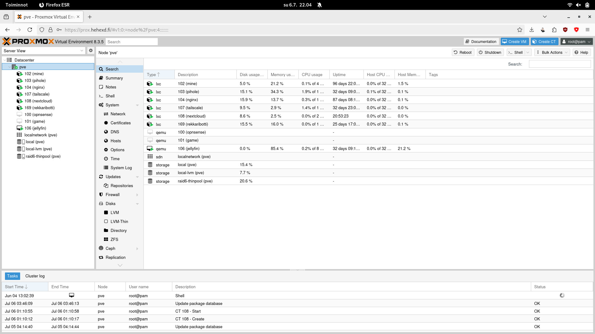
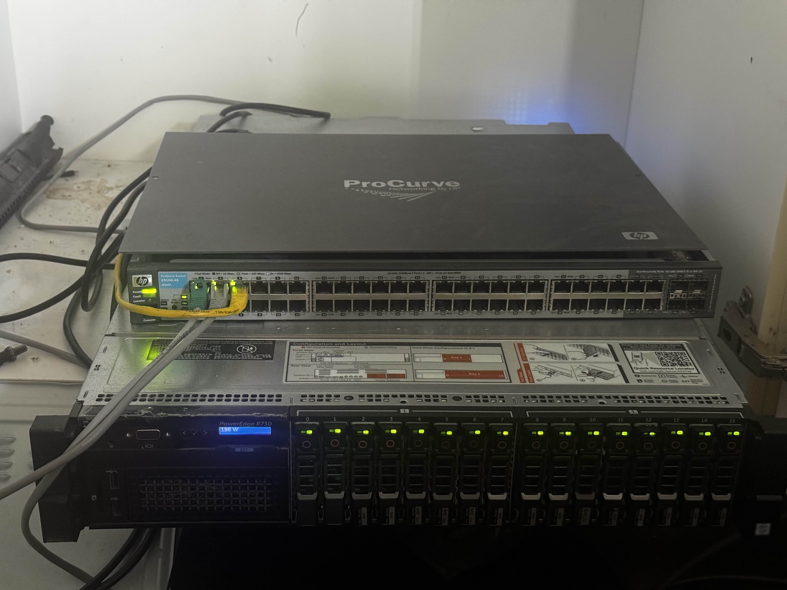

Gallery



Exploring enterprise-grade hardware and services at home
My home lab is built around a Dell R730 PowerEdge server and serves as a platform for learning, experimenting, and hosting various services. It allows me to explore enterprise-grade hardware and software in a personal environment.
The lab is used for tasks such as virtualization, container orchestration, and running self-hosted applications. It also helps me improve my skills in system administration, networking, and automation.
The project is a continuous work in progress, with regular upgrades and new experiments.
I am running Proxmox VE as the hypervisor, which allows me to create and manage virtual machines and containers efficiently. Remote access is provided through Tailscale, due to my apartment network being firewalled and doesn't support opening ports.
Hosted services include Nextcloud for cloud storage, Pi-hole for ad-blocking and local domains, OpnSense for firewall and routing, Jellyfin for media streaming, and various other applications for personal use.
Network infrastructure consists of the R730 server, a Telewell router working as a Wi-Fi access point, my personal desktop computer, TV and my Playstation all connected through an HP ProCurve managed switch.
If you have any questions about this project or would like to collaborate, feel free to reach out:
Email: henrik@heiniset.fi
 GitHub
GitHub LinkedIn
LinkedIn